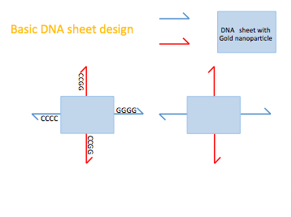
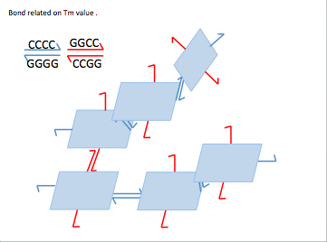
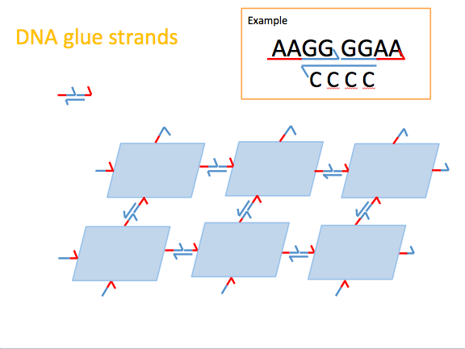
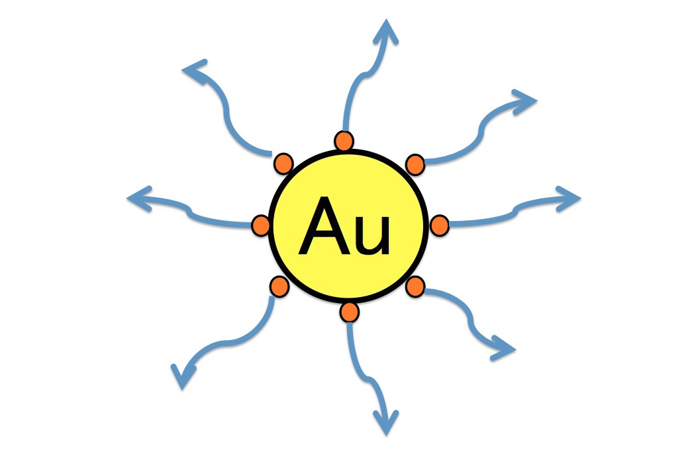
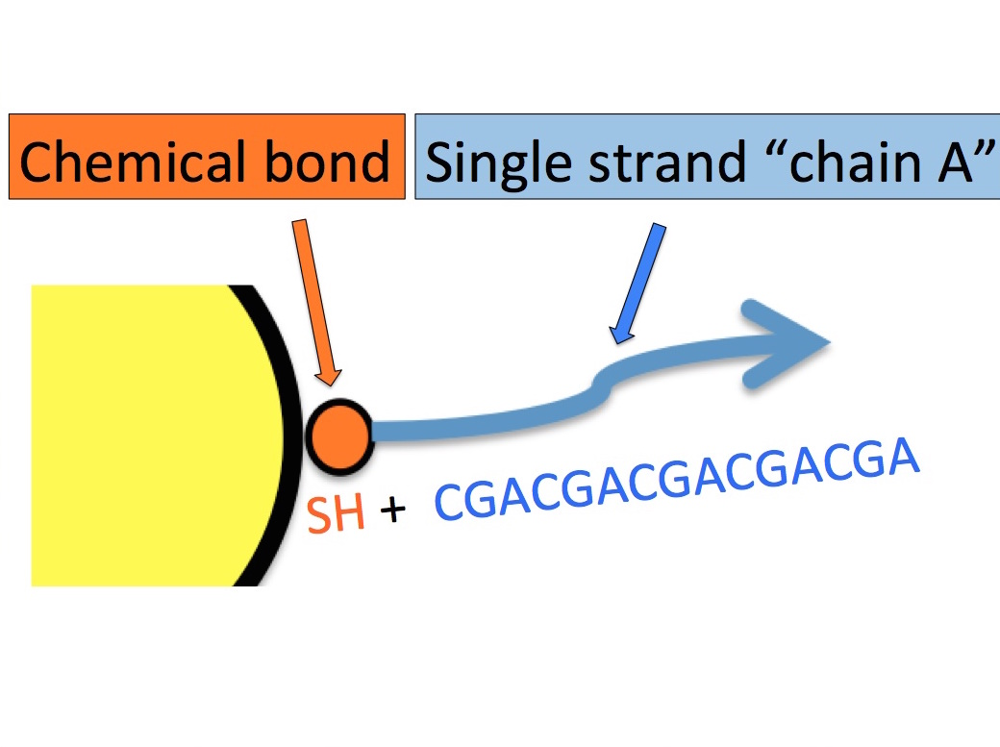
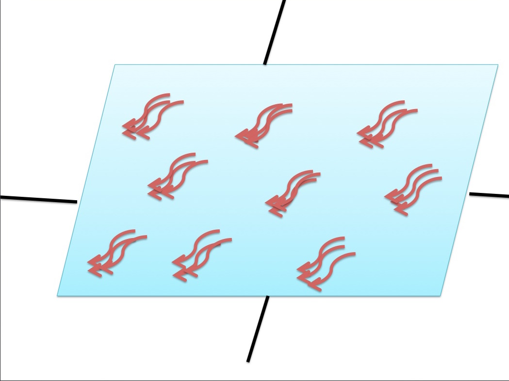
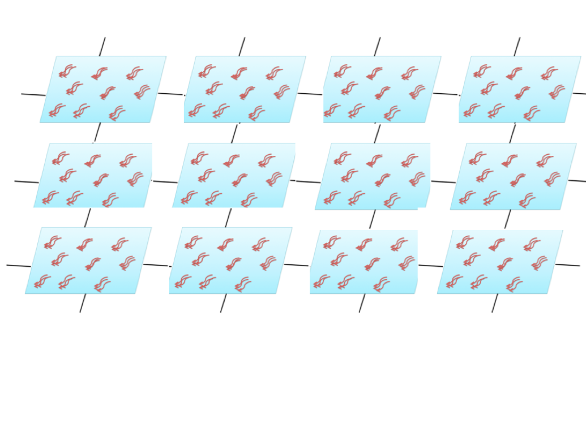
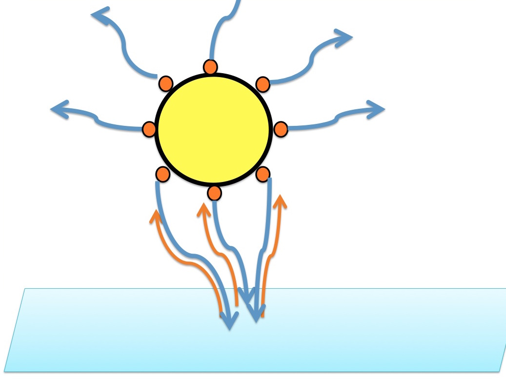
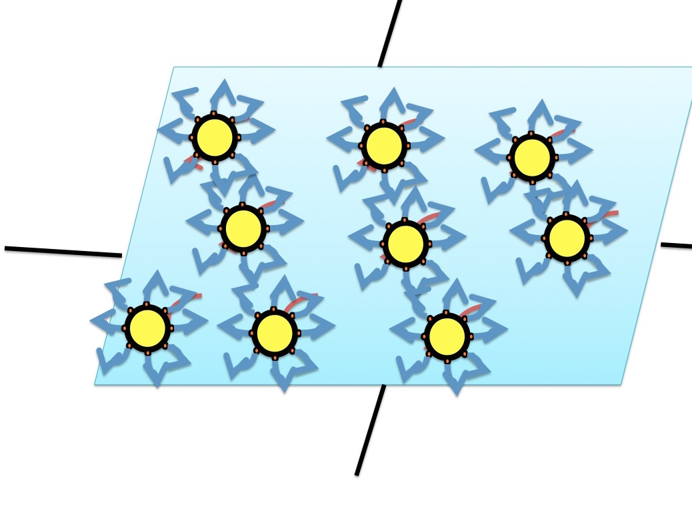
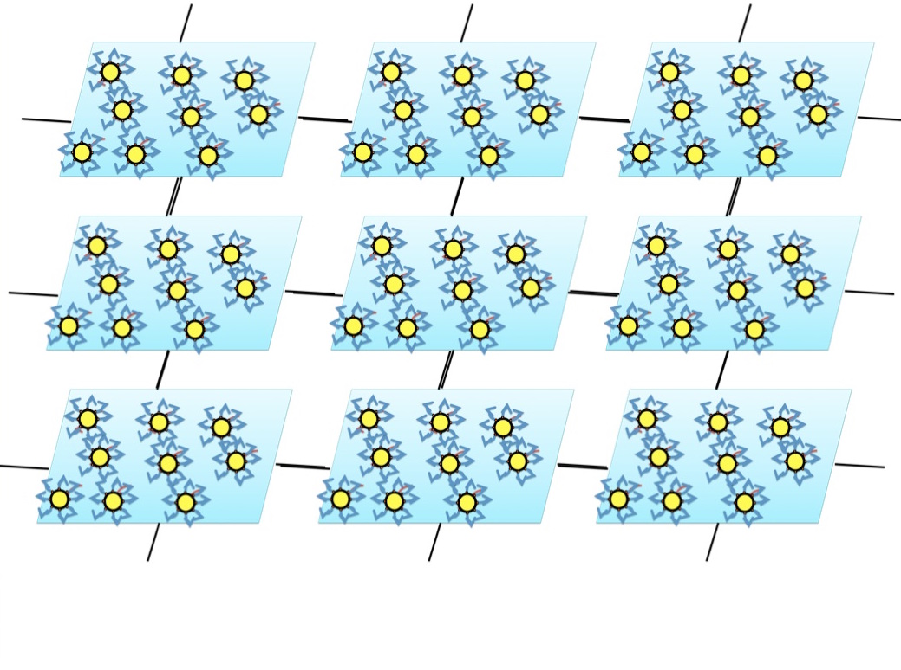

EXPERIMENT
STEP1
The solution for origami synthesis contains Single-Strand DNA (7000 bases long) as a template of the DNA origami (1 rectangular). This is a circular DNA genome derived from the M13 bacteria phage, M13mp18.
Staple strands from Wickham et al. minimal twist design (Wickham, Shelley FJ, et al. "Direct observation of stepwise movement of a synthetic molecular transporter." Nature nanotechnology 6.3 (2011): 166-169) are added in the solution and is annealed in a PCR machine using the standard protocol.
Then, the origami is purified by gel filtration, removing the excess staples.
Nicking enzymes are added to break the superhelical structure of DNA.

STEP2
To form the DNA sheet, we link the DNA origamis made in Step 1 planarly by bonding them through extended staple strands (see Figure below.) We consider two ways for this bonding to happen correctly: The first way is to utilize the Tm (melting temperature) value of the bonding. When we bind single stranded DNA to one origami, and bind the complementary single strand to another origami, these two structures can link with each other when the temperature is low enough for the strands to bind. However, with this method, the origami sheets may form a self-stabilizing 3-dimensional structure during the annealing process of the origami. This would make it difficult for the origami to create a planar sheet.  
The second way is to use an additional strand to link the extended staple strands (S). We call this additional strand, ‘glue strand.’ In order to achieve this method, we first bind single stranded DNAs that do not anneal with itself, such as AAGG, to the origami. Then, those origami are spread over a surface (See figure below). By doing so, we can prevent the sheets from forming 3D structures. Finally, we add the ‘glue strand,’ such as CCCC. This sequence can bind to GGGG, which is found when two sheet-bound DNA strands line up (AAGG-GGAA), and as a consequence connects the origamis. However, since we use two DNA strands to connect them, the distance between them may be too long to maintain the stability of the sheet.

STEP3
We attach single stranded DNA strands on a gold nanoparticle by chemical bonding. The binding affinity of sulfur to gold is high; therefore, a thiolated DNA strand can be bonded to a gold nanoparticle by a sulfur molecule. This single strand (called “A”), which is bound to gold, consists of 12 bases, CGACGACGACGA, which has a high Tm (melting temperature) value of 40 degrees Celsius.
DNA origami are prepared with extended staple strands so that the complementary strand of ‘A’ (called B) sticks out (similar to Wickham et al.'s strategy). These chain A and B form double strands, therefore, the gold particles are fixed to the DNA sheet. We design three sets of these double strands per one gold particle, so that we can make the structure more stable.
We show the placement of gold particles below.       